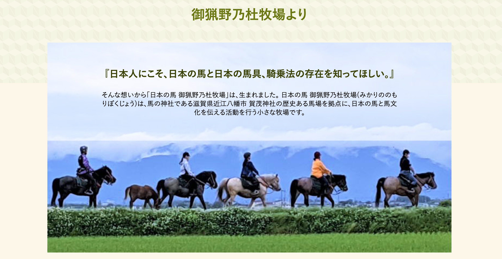
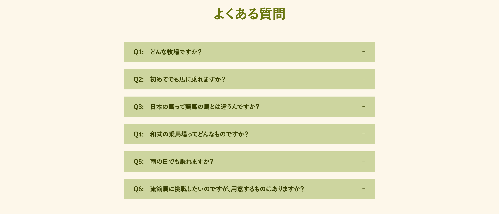

日本の馬 御猟野乃杜牧場ホームページ
(架空リニューアル)

日本の馬と馬文化を伝える活動を行う牧場であること、馬と触れ合う体験ができることを伝えられるホームページを目指した。
サイトURL：https://asknmt.github.io/horse/
・馬について知りたい人
・乗馬体験など、馬と触れ合いたい人
・伝統行事に興味のある人
・馬や伝統行事に対し、親しみやすさを感じてもらえること
・活動を伝えるイベントが実施されていることを知ってもらう
・店舗の場所がどこなのか知ってもらう
・セクションの区切りがわかりにくい
・説明部分が多く、重要な情報を拾いにくい
・気軽に体験できない印象を受ける
自然を感じさせるような淡い茶色と緑をメインに使用した。

トップに写真を配置し、ホームページを最初に見た時に目に留まるようにした。 風景が多く乗馬している人が映った写真を使用し、自然と馬を近くに感じてもらえるようにした。 こんな風景が見てみたいと思ってもらえるように最初に目につくところに配置。 挨拶は元サイトでは長く記載されていたが、あまり長いと下までスクロールしてもらえないと考え、ここでは短く省略した。

イベントセクションについては、直近のイベントの様子と今後のスケジュールを記載。 牧場がどんなイベント活動をしているのか端的に載せることで、少しでも馬に興味のある人が行ってみようと気軽に思ってもらえるようにした。 また、写真を載せることで、どんなイベントなのか伝わりやすくした。

元サイトでは別ページにまとまっていたが、ここでは全く違う種類の3つに焦点を当てて載せた。 写真は乗馬している人の表情がわかるようにトリミングした。 楽しい雰囲気を出したかったので丸をベースに構成した。 他のコースの写真は全て載せきれないので、スライドショーにして流し、スクロールしても目に留まるようにした。 背景色はイベントセクションとは違う緑を用いることで差別化を図った。

元サイトではそのまま載っていた質問は、アコーディオンメニューにしてコンパクトにまとめた。 気になる項目のみ見られるため、ユーザーの効率化も期待できると考えた。